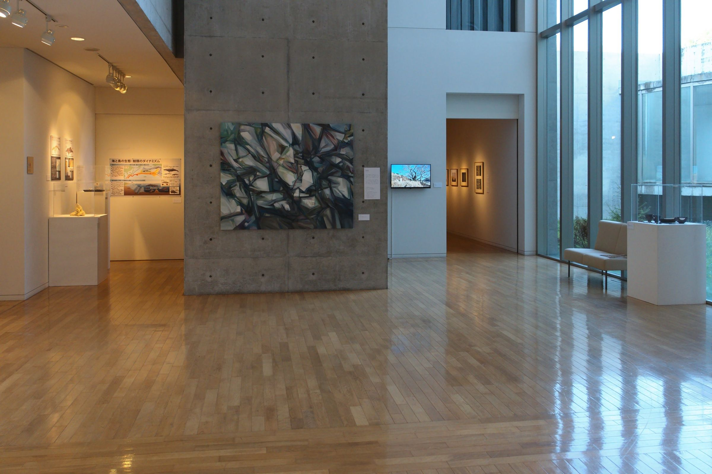
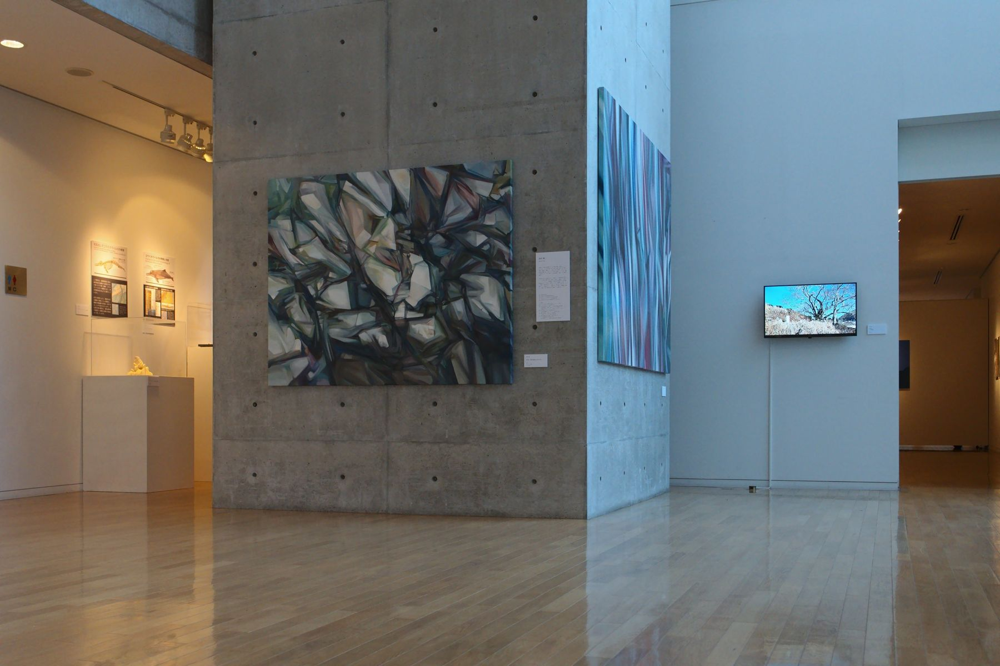
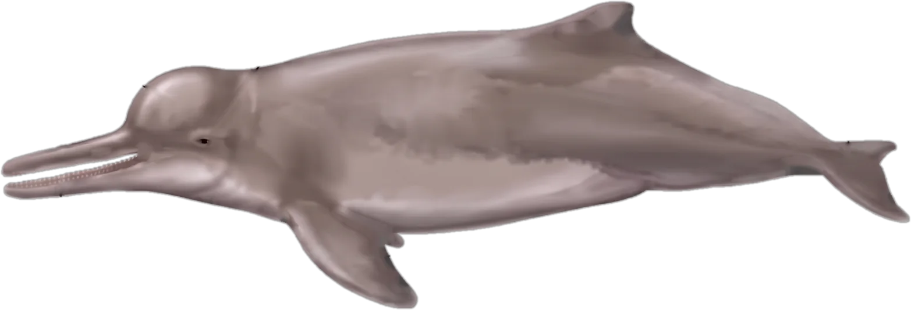

絵画
油彩の透明層の重なりで、二つの風土を平面に堆積させる。展示の核。

津田 翔一Tsuda Shoichi — Painting / Video / Ceramics
Two Landscapes, One Pillar
標高1,100m、山に囲まれた「海なき町」小海。そこに眠る水の記憶と、津田が描いてきた架空の風土「左美都」。Hall 3 のコンクリートの柱の二面に、二つの風景を掛け分けた。
Koumi
岩間「稲荷神社と川の石」
千曲川を遡って海を目指した「くじらの夫婦」の伝承と、八ヶ岳の崩壊が生んだ湖沼群。崩れ落ちる岩肌を、鋭角的な面で組み直した。
Samizu
林(3)
津田が生まれ育った長野市信更町三水をモチーフにした架空の風土。垂直に流れる筆触が、柱の高さと呼応する。

番号を押すと、その場所の写真が開きます。
Installation Views — 2026.10.11
美術館の外から、絵の表面まで。6つの地点を、一歩ずつ近づいていく。
Two Videos
小海 ｜ 窓側の通路壁
1984年ごろに現地取材した動画を、AI等で高画質化した——という想定の映像作品。Hall 3 へ向かう通路にモニターを1台だけ置き、展示への「助走」とした。「くじらの夫婦」と「稲荷神社と川の石」、二つの伝承をつなぐ。
2026年3分44秒ループ画面内は素材カットの再現
左美都 ｜ 柱の右手、白い壁
『林(3)』の右手では、長野市信更町三水を2023年に現地取材した映像が流れる。架空の風土「左美都」のモチーフとなった、実在の土地の記録。
2023年68分14秒ループ
The Whale's Chamber
柱の左奥の小部屋に、くじらの生態と分布を伝える資料パネルと、二つの展示ケース。磁土でつくった椎骨と耳骨は、発掘されたことを想定した模擬考古資料。視線は風景から、骨のディテールへ降りていく。
Koumi River Dolphin — MLMM 10452
小海の地層から見つかったとされる小型ハクジラ類「コウミカワイルカ」。姿・化石・地層、そして日本海からの遡上の道のりを解説します。
解説ページへ →
Samizu Ware
窓辺には、左美都の地層から出土した——という設定の器と破片。その先に、五色をまとった現代の器「再考 左美都焼」が待っている。
古代の層 ｜ Hall 3 の窓辺
黒く焼けた碗は、五色の左美都焼きへとつながる「古代の記憶」の側に置かれている。
2023〜2025年ミクストメディア可変
左美都焼き古代の記憶から現代へ。祈りと〈いと〉が織りなす器。
SHOP — 館内の円卓で購入できます
輪になって並ぶ「再考 左美都焼」と、左美都の記録をまとめた書籍。見本を手に取って選べます。
器
碗やカップなど、五色をまとった器。価格は各器の底に表示。
書籍
小海町高原美術館 館内の円卓にて ／ 会期 2026年9月12日（土）〜11月15日（日）
Which Landscape Are You?
Concept & Record
神話（くじらの夫婦）と地質学的な事実（八ヶ岳崩壊）を視覚言語として編み直し、架空の「左美都」と実在の「小海」を等価に扱う。風景を事実ではなく、記憶として見るために。
油彩の透明層の重なりで、二つの風土を平面に堆積させる。展示の核。
実在の風景と、海を目指したくじらの視点を、静かな空間に重ねる。
模擬考古資料が、視線をマクロな風景からミクロな地層へ誘う。
高い天井、コンクリートの柱、大窓。建築そのものを展示の一部に。
静的な展示空間が、過去と現在、
神話と実在が交差する動的な「場」へと変容する。
左美都の風景小海の風景サイズの単位は cm
展示構成は、展示作品案 第2版（2026年8月1日）、展示エリアおよび空間構成に関する方針案（8月8日）を経て、第3版（9月）で確定。設営 2026年9月8日〜10日 ／ オープニング 9月12日。会場写真は会期中の10月11日に撮影。